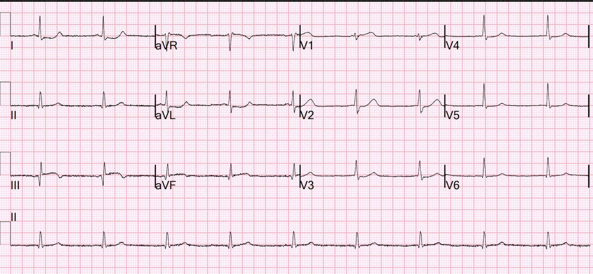
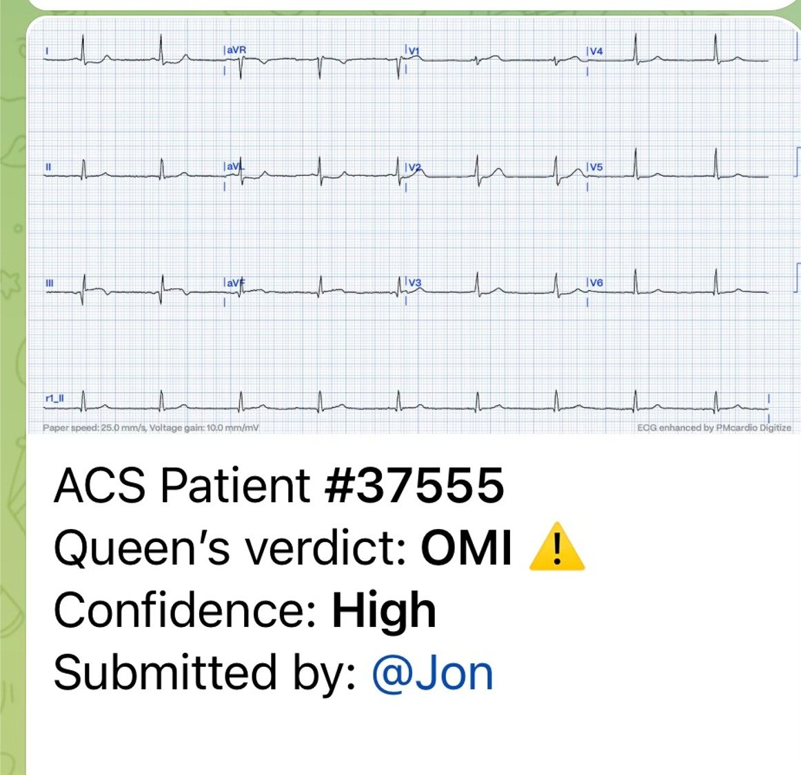
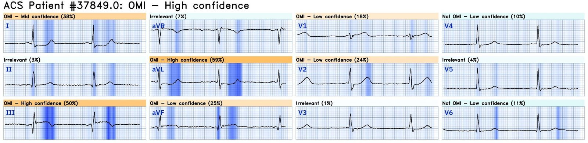
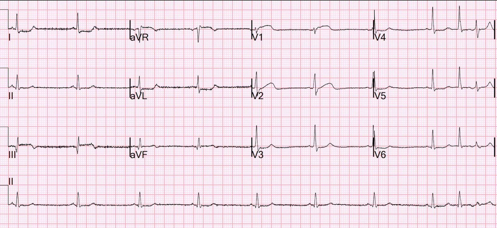
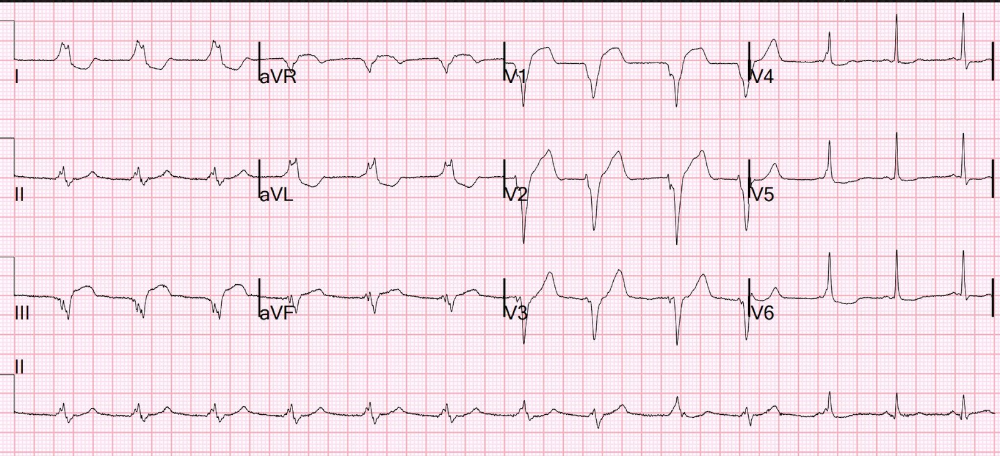
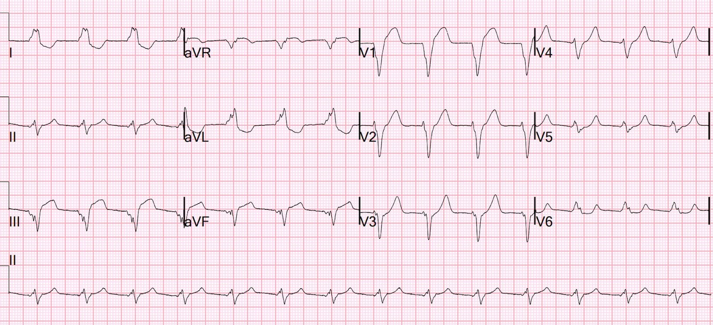
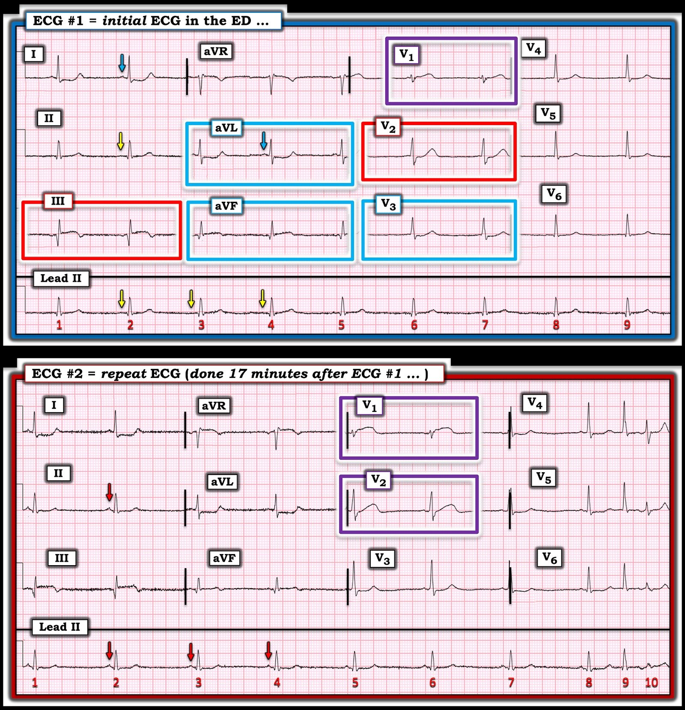
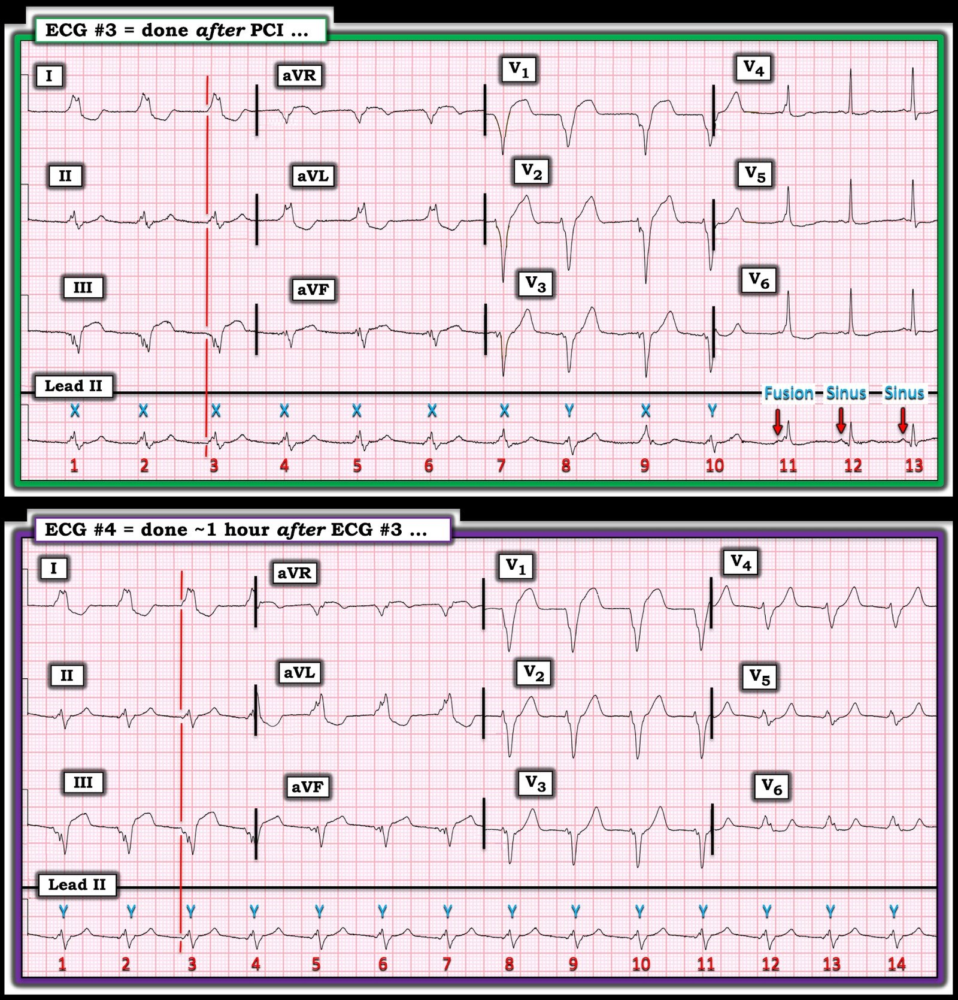

10/05/2024 — Vì sao bệnh nhân này bị sốc?
Bản dịch tiếng Việt của bài "Why is this patient in shock?" – Dr. Smith’s ECG Blog. Giữ nguyên toàn bộ 9 hình ảnh của bản gốc.
Điện tâm đồ này được đưa cho một đồng nghiệp của tôi đang làm việc ở khu phân loại (triage).


Thuật toán thông thường ghi “Bất thường sóng ST-T không đặc hiệu.”
Bạn nghĩ sao?
Đồng nghiệp của tôi chẩn đoán ngay OMI thành dưới. (Bạn có thấy: ST chênh lên (STE) kín đáo ở III và aVF? Biến dạng phần cuối QRS ở aVF? ST chênh xuống ở aVL? ST chênh xuống ở V2-V4 của OMI thành sau? Có sóng T đảo ngược ở phần cuối tại III cùng phần cuối sóng T dương ở aVL — Điều này gợi ý mạnh tái tưới máu NẾU triệu chứng của bệnh nhân đã giảm. Nhưng triệu chứng chưa hề giảm.)
Điện tâm đồ này được thuật toán thông thường đọc là “Bất thường ST-T không đặc hiệu”. Một bác sĩ tim mạch can thiệp đọc lại (overread) cũng cho là không đặc hiệu.
Anh ấy đi tìm bệnh nhân: Một người đàn ông trung niên đang làm việc vào chiều nay thì đột ngột choáng váng kèm vã mồ hôi, buồn nôn và nôn nhiều lần. Các triệu chứng kéo dài vài giờ, nên vợ ông thuyết phục ông đến bệnh viện. Ông chưa từng có triệu chứng tương tự.
Điện tâm đồ này có giá trị chẩn đoán bất kể bệnh nhân có đau ngực hay không.
Ông phủ nhận rõ ràng đau ngực hay khó thở. Điều này đã được xác nhận đi xác nhận lại với bệnh nhân.
Tất cả đồng nghiệp của tôi đều giỏi nhận ra OMI trên điện tâm đồ.
Anh ấy gửi điện tâm đồ cho Queen of Hearts:


Và đây là phần giải thích của AI (Explainability):


Register for access to Queen of Hearts here (Đăng ký quyền truy cập Queen of Hearts tại đây)
Bệnh nhân được chuyển đến khu hồi sức. Huyết áp tâm thu của ông là 80 mmHg và lactat là 6 mEq/L. Bệnh nhân đang bị sốc.
Vì sao ông bị sốc? —Câu trả lời nằm trên điện tâm đồ.
Nếu bạn chưa chắc, có lẽ bạn sẽ hiểu sau khi xem điện tâm đồ này, ghi 17 phút sau:


Bạn nghĩ sao?
Có ST chênh lên (STE) rõ hơn nhiều ở V1, mà, nhất là trong bối cảnh OMI thành dưới, có giá trị chẩn đoán OMI thất phải (RV) (nhồi máu thất phải - RV MI). Điều này hàm ý tắc RCA đoạn gần, ở đoạn gần so với nhánh bờ thất phải là nhánh cấp máu cho thất phải. Không phải mọi OMI do tắc RCA đoạn gần đều gây sinh lý nhồi máu thất phải (giảm cung lượng thất phải) và thiếu máu cục bộ thất phải trên điện tâm đồ: thất phải thường nhận tuần hoàn bàng hệ từ LAD, giúp bảo vệ nó khỏi những biến cố như thế này.
Ông được đưa vào phòng thông tim (cath lab) và phát hiện tắc hoàn toàn RCA đoạn gần.
Kết quả chụp mạch vành:
1. Thân chung động mạch vành trái: không hẹp.
2. LAD: hẹp 40-50% ở lỗ xuất phát (ostial), ngoài ra lòng mạch không đều.
3. LCX: lớn, không ưu thế. Cấp máu cho một nhánh bờ tù (OM) lớn. Lòng mạch không đều,
nhưng không hẹp.
4. RCA: tắc đoạn gần do huyết khối hoặc thuyên tắc, dòng chảy TIMI 0. Động mạch này
cấp máu cho nhánh RPDA (OMI thành dưới) và nhánh RPLA (OMI thành sau), không có hẹp.
Một điện tâm đồ sau PCI được ghi lại:


Bạn nghĩ sao?
Bản ghi này được chẩn đoán là “nhịp không xác định kèm LBBB,” nhưng không có sóng P, nên tôi nghĩ đây là nhịp tự thất gia tốc (AIVR) sau tái tưới máu, và vì khởi phát từ thất nên có hình dạng LBBB.
OMI vẫn còn rõ.
Trong AIVR như thế này, bạn vẫn có thể dùng tiêu chuẩn Sgarbossa cải biên theo Smith, và vì có ST chênh lên ngược hướng quá mức xét theo tỷ lệ ở chuyển đạo III (STE tại điểm J chia cho sóng S = 2,5/5,5 = 0,45; giá trị ＞25% chỉ ở một chuyển đạo đã có giá trị chẩn đoán và＞20% thì gần như chắc chắn chẩn đoán.)
Một điện tâm đồ tương tự khác được ghi một giờ sau:


Cũng là AIVR với thiếu máu cục bộ kéo dài
–Kích thước buồng thất trái, độ dày thành và chức năng tâm thu bình thường; phân suất tống máu ước tính là 55-60%.
–Rối loạn vận động thành khu trú ở các vùng thành dưới đoạn giữa đến đoạn đáy.
—Thất phải giãn vừa với chức năng tâm thu thất phải giảm vừa.
Áp lực tâm thu động mạch phổi ước tính là 17 mmHg + áp lực nhĩ phải (RA).
Dựa trên hình ảnh tĩnh mạch chủ dưới (IVC), áp lực nhĩ phải tăng đáng kể. (Smith: đó là do cung lượng thất phải giảm, nên máu ứ ngược về nhĩ phải)
Vậy điều này cũng ủng hộ nhồi máu thất phải.
Nhồi máu thất phải (OMI thất phải)
Điều trị nhồi máu thất phải trước khi tái tưới máu: có thể bù dịch nhẹ nhàng (xem bên dưới) và norepinephrine để giữ huyết áp tâm thu cao. Khác với thất trái được tưới máu trong thì tâm trương (vì áp lực buồng tim rất cao trong thì tâm thu), thất phải áp lực thấp được tưới máu tốt nhất trong thì tâm thu. Giữ huyết áp tâm thu bình thường rất quan trọng để giảm nhẹ thiếu máu cục bộ thất phải. Ngay cả khi nhánh bờ thất phải bị tắc, tuần hoàn bàng hệ vẫn có thể cứu thất phải nếu áp lực tâm thu đủ cao.
Bù dịch nhẹ nhàng: Thận trọng tránh truyền quá nhiều dịch; căng giãn quá mức thất phải vốn đã giãn do thiếu máu cục bộ có thể gây chèn ép lên vách liên thất và làm giảm cung lượng thất trái, tương tự như trong PE. Nó cũng có thể đẩy thất phải sang nhánh xuống của đường cong Starling, làm chức năng bơm của thất phải suy giảm thêm.
Chuyển đạo đơn lẻ tốt nhất để phát hiện nhồi máu thất phải trên điện tâm đồ 12 chuyển đạo thông thường là V1. Nếu không có ST chênh xuống (STD) ở V2, V1 có độ nhạy trung bình đối với tắc RCA đoạn gần. Nhưng nếu có bất kỳ STD nào ở V2, tức là có OMI thành sau, và nó cũng “kéo xuống” đoạn ST ở V1, che lấp nhồi máu thất phải.
Chúng tôi đã chứng minh điều này: In inferior myocardial infarction, neither ST elevation in lead V1 nor ST depression in lead I are reliable findings for the diagnosis of right ventricular infarction (Trong nhồi máu cơ tim thành dưới, cả ST chênh lên ở chuyển đạo V1 lẫn ST chênh xuống ở chuyển đạo I đều không phải dấu hiệu đáng tin cậy để chẩn đoán nhồi máu thất phải)
Sự suy giảm độ nhạy như vậy khi có OMI thành sau cũng đúng với V4R (chuyển đạo bên phải) (Kosuge và cs.)
Thêm các bài báo về mức nguy hiểm của OMI thất phải:
Right ventricular infarction as an independent predictor of prognosis after acute inferior myocardial infarction (Nhồi máu thất phải là yếu tố tiên lượng độc lập sau nhồi máu cơ tim thành dưới cấp). New Engl Journal. Bạn có thể củng cố chẩn đoán nhồi máu thất phải bằng các chuyển đạo bên phải, đặc biệt là V4R, nhưng Kosuge (ở trên) đã cho thấy ngay cả đoạn ST ở V4R cũng có thể bị kéo xuống bởi ST chênh xuống của nhồi máu thành sau, dẫn tới âm tính giả.
Impact of right ventricular involvement on mortality and morbidity in patients with inferior myocardial infarction (Tác động của tổn thương thất phải lên tử vong và bệnh suất ở bệnh nhân nhồi máu cơ tim thành dưới). JACC
Right ventricular dysfunction and risk of heart failure and mortality after myocardial infarction (Rối loạn chức năng thất phải và nguy cơ suy tim, tử vong sau nhồi máu cơ tim). JACC

===================================
BÌNH LUẬN CỦA TÔI, bởi KEN GRAUER, MD (10/5/2024):
===================================
“Cái hay” của ca hôm nay — là các điện tâm đồ đều kể một câu chuyện, ngay cả trước khi biết bệnh sử của bệnh nhân.
- Tôi tập trung bình luận vào câu chuyện này — trong đó tôi sẽ bổ sung vài suy nghĩ vào phần bàn luận xuất sắc của BS. Smith. Cho rõ ràng — tôi đã đánh nhãn 4 bản ghi liên tiếp trong ca hôm nay.
==================================
Xem điện tâm đồ ban đầu:
Ngay cả trước khi đi sâu vào các điểm MẤU CHỐT đã giúp đồng nghiệp của BS. Smith chẩn đoán ngay lập tức OMI cấp …
- BẠN có để ý nhịp trong điện tâm đồ #1 không?
- GỢI Ý: Nhịp trong điện tâm đồ #1 không phải nhịp xoang!
TRẢ LỜI:
- Để nhịp là nhịp xoang — sóng P phải dương ở chuyển đạo II. Chỉ có 2 ngoại lệ cho nhận định này là tim sang phải và đặt sai vị trí điện cực.
- Các mũi tên VÀNG ở chuyển đạo II của điện tâm đồ #1 cho thấy không có sóng P ở chuyển đạo này. Thay vào đó — thấy một sóng P nhỏ, dương ở chuyển đạo I và aVL (mũi tên XANH ở các chuyển đạo này). Không có đảo điện cực. Hình ảnh này, trong đó không thấy sóng P rõ ở chuyển đạo II — nhưng thấy sóng P dương ở chuyển đạo I và aVL — phù hợp với nhịp nhĩ thấp.
- Điểm MẤU CHỐT: Nhịp nhĩ thấp thường gặp nhất là một biến thể bình thường phổ biến — dù trong ca hôm nay, nó có thể mang ý nghĩa tương tự như một nhịp thoát bộ nối. Dẫu vậy, mặc dù việc không có nhịp xoang không làm thay đổi xử trí lâm sàng ở bệnh nhân hôm nay — Bạn có thể đơn giản hóa công việc (và không bao giờ bỏ sót nhịp xoang nữa) bằng cách thường quy dành 2-3 giây đầu tiên khi xem mọi điện tâm đồ bạn gặp để quét dải nhịp chuyển đạo II dài bằng “con mắt” đã được rèn luyện của mình, nhằm bảo đảm mỗi QRS đều có một sóng P dương đi trước.
- LƯU Ý: Điện tâm đồ #2 được ghi 17 phút sau. Các mũi tên ĐỎ ở điện tâm đồ #2 cho thấy nhịp xoang đã trở lại (mũi tên ĐỎ ở chuyển đạo II dài của điện tâm đồ #2). Nhát #9 và 10 ở điện tâm đồ #2 đến sớm, và có lẽ là PAC (trong đó nhát #10 có lẽ được dẫn truyền lệch hướng).


Nhận ra OMI của ca hôm nay trong vòng vài giây!
Khi có kinh nghiệm — việc nhận ra OMI của ca hôm nay nên hoàn tất trong chưa đầy 20 giây (ngay cả khi không biết bệnh sử).
- Khi đã xác định nhịp trên điện tâm đồ #1 là nhịp trên thất (tức là một nhịp nhĩ thấp, như đã nêu ở trên) — “con mắt” của tôi ngay lập tức bị thu hút vào chuyển đạo III (trong hình chữ nhật ĐỎ), nơi có sóng Q lớn, ST dạng vòm (coving) với ST chênh lên kín đáo-nhưng-chắc chắn, và sóng T đảo ngược ở phần cuối.
- Sự xác nhận rằng ST chênh lên kín đáo ở chuyển đạo III là thật và cấp tính — đến chỉ trong vài giây từ 2 chuyển đạo mặt phẳng trán nằm trong các hình chữ nhật XANH: i) Ở chuyển đạo aVF — sóng Q và ST thẳng đuỗn kèm ST chênh lên nhẹ cho thấy sự ủng hộ từ chuyển đạo kế cận này đối với chuyển đạo III; và, ii) Ở chuyển đạo aVL bên cao — chúng ta thấy hình ảnh ST-T ngược lại đúng như ảnh soi gương so với hình ảnh ở chuyển đạo III. Thay đổi soi gương này cũng thấy ở chuyển đạo chi bên cao còn lại ( = chuyển đạo I) — và khẳng định chẩn đoán OMI thành dưới cấp cho đến khi chứng minh được điều ngược lại.
- Chúng tôi đã nhiều lần nhấn mạnh rằng sóng ST-T ở chuyển đạo V2 và V3 bình thường phải có ST chênh lên nhẹ, dốc lên thoai thoải. Thay vào đó, chuyển đạo V2 trên điện tâm đồ #1 (trong hình chữ nhật ĐỎ) nổi bật với đoạn ST phẳng (thẳng) không hề chênh lên. Vì chúng ta đã xác lập chẩn đoán OMI thành dưới cấp — hình ảnh sóng ST-T trong hình chữ nhật ĐỎ này xác lập chẩn đoán OMI thành sau đi kèm (điều này còn được củng cố thêm bởi vùng chuyển tiếp đột ngột sang sóng R chiếm ưu thế ngay từ chuyển đạo V2).
- Trong hình chữ nhật XANH ở chuyển đạo V3 kế cận — chúng ta thấy ST dẹt và ST chênh xuống nhẹ-nhưng-thật — do đó cung cấp thêm bằng chứng về OMI dưới–sau cấp.
- LƯU Ý: Thời gian mà một “con mắt có kinh nghiệm” cần để nhận ra các dấu hiệu điện tâm đồ nói trên trong 2 hình chữ nhật ĐỎ và 3 hình chữ nhật XANH phải dưới 20 giây.
Còn chuyển đạo V1 trên điện tâm đồ ban đầu thì sao?
OMI thành sau cấp gây ST chênh xuống tối đa ở chuyển đạo V2, V3 và/hoặc V4. Dù ít rõ hơn — OMI thành sau thường cũng gây ST thẳng đuỗn kèm chênh xuống phần nào ở chuyển đạo V1. OMI thành sau không nên gây ST chênh lên hay sóng T tối cấp ở chuyển đạo V1 — trừ khi có nhồi máu thất phải (RV MI) đi kèm.
- Điểm MẤU CHỐT: Ngay khi nhận ra OMI dưới-sau cấp trên điện tâm đồ #1 — “con mắt” của chúng ta phải bị thu hút vào sóng T cao và “béo” không tương xứng ở chuyển đạo V1 của bản ghi này (trong hình chữ nhật TÍM). Như BS. Smith đã nêu — tầm quan trọng lâm sàng của việc nhận ra rằng phức bộ QRS nhỏ xíu ở chuyển đạo V1 không nên đi kèm một sóng T “quá đầy đặn” (hypervoluminous) không tương xứng — là vì dấu hiệu này có giá trị chẩn đoán RV MI cấp (qua đó giải thích tình trạng tụt huyết áp của bệnh nhân này). Ngoài ra, dấu hiệu này còn định vị động mạch “thủ phạm” là RCA đoạn gần.
So sánh điện tâm đồ #1 và điện tâm đồ #2:
Khi có OMI thành sau cấp + tổn thương thất phải — có sự tương tác qua lại giữa ST chênh lên ở bên phải (do RV MI) — và ST chênh xuống ở thành trước (do OMI thành sau).
- Trên điện tâm đồ #1 — ST dẹt kèm chênh xuống nhẹ do OMI thành sau rõ nhất ở chuyển đạo V2 và V3.
- 17 phút sau, khi ghi điện tâm đồ #2 — chúng ta thấy ST chênh lên do RV MI tăng rõ rệt ở chuyển đạo V1,V2 — đến mức chuyển đạo V2 không còn thể hiện thay đổi ST-T của OMI thành sau nữa (trong các hình chữ nhật TÍM trên điện tâm đồ #2). Ngược lại — các chuyển đạo chi trên điện tâm đồ #2 không có thay đổi đáng kể nào theo thời gian.
==================================
Còn nhịp sau PCI thì sao?
Tôi thấy các nhịp sau PCI trên điện tâm đồ #3 và điện tâm đồ #4 thật thú vị, đầy thử thách — và có giá trị thông tin lâm sàng.
- Tôi hoàn toàn đồng ý với BS. Smith — rằng “chủ đề” của các nhịp sau PCI này là sự xuất hiện các biến thể của AIVR (nhịp tự thất gia tốc — Accelerated IdioVentricular Rhythm) — mà xét theo thời điểm xuất hiện, gợi ý đây là một rối loạn nhịp do tái tưới máu (thường đi kèm với tái tưới máu thành công nhờ PCI).
- AIVR thường chỉ thoáng qua trong bối cảnh sau PCI. Dù mất “cú hích” nhĩ (atrial kick) — phần lớn bệnh nhân vẫn ổn định huyết động (nhờ PCI thành công), và khi đó không cần can thiệp gì!


Điện tâm đồ #3 đầy thử thách!
Những khó khăn tôi gặp khi đọc nhịp đầu tiên sau PCI ( = điện tâm đồ #3) gồm: i) Tìm sóng P; và, ii) Xác định vì sao lại có nhiều hình dạng QRS khác nhau đến vậy.
- Tôi cho rằng không có sóng P nào trên điện tâm đồ #3 trong 10 nhát đầu của dải nhịp chuyển đạo II dài. Tôi kẻ một đường thẳng đứng màu ĐỎ từ điểm khởi đầu của phức bộ QRS rất rộng ở chuyển đạo I. Điều này cho tôi biết rằng phần trát đậm và khía ở đầu phức bộ tại chuyển đạo II không phải là hoạt động nhĩ — mà là phần khởi đầu của phức bộ QRS ở chuyển đạo này.
- Mặc dù 10 nhát đầu trông giống hình dạng LBBB (tức là sóng R dương hoàn toàn ở các chuyển đạo bên I và aVL — và QRS âm ưu thế ở các chuyển đạo trước V1,V2,V3) — việc không có hoạt động nhĩ nghiêng hẳn về một nhịp thất (hơn là nhịp bộ nối kèm LBBB) là nguyên nhân làm QRS giãn rộng.
- Điểm MẤU CHỐT: AIVR với hình dạng giống LBBB gợi ý nhịp thất này xuất phát từ thất phải — phù hợp với RV MI cấp gây sốc trong ca hôm nay.
- Nhát #12 và 13 — là nhát dẫn truyền từ xoang (các mũi tên ĐỎ chỉ các sóng P xoang chắc chắn đứng trước nhát #12 và 13).
- Lần ngược lại — tôi cho rằng mũi tên ĐỎ trước nhát #11 cũng là một sóng P xoang, dù khoảng PR ngắn hơn so với trước nhát #12 và 13.
- Phức bộ QRS của nhát #11 rõ ràng rộng hơn QRS của các nhát xoang #12 và 13 — nhưng không rộng bằng 10 phức bộ QRS đứng trước nhát #11 (Điều này có lẽ dễ nhận ra hơn khi nhìn các nhát được ghi đồng thời trên bản ghi 12 chuyển đạo phía trên dải nhịp chuyển đạo II dài). Do đó — nhát #11 là một nhát hỗn hợp! (nhận định này củng cố thêm suy luận của chúng ta rằng các nhát #1 đến #10 có nguồn gốc thất = AIVR).
- Phần gây bối rối cho tôi trên điện tâm đồ #3 — là hình dạng QRS thay đổi của các nhát #1 đến #10 trên dải nhịp chuyển đạo II dài. Cho rõ ràng — tôi đánh nhãn các phức bộ rộng, đẳng pha bằng chữ “X” ( = các nhát #1 đến #7; #9) — và các phức bộ rộng âm ưu thế bằng chữ “Y” ( = các nhát #8 và 10).
- Trong khi khoảng R-R của các phức bộ “X” bằng nhau — thì 2 phức bộ “Y” đứng sau một khoảng R-R ngắn hơn một chút.
- GIẢ THUYẾT CỦA TÔI: Tôi ngờ rằng có 2 ổ thất, mỗi ổ tạo ra phiên bản AIVR riêng của mình. Ủng hộ giả thuyết của tôi — Lưu ý rằng khoảng 1 giờ sau, điện tâm đồ #4 cho thấy tất cả các nhát trên chuyển đạo II dài của bản ghi thứ 2 sau PCI này có cùng một hình dạng QRS — phù hợp với hình dạng âm ưu thế của phức bộ “Y” (và với tần số AIVR nhanh hơn một chút so với AIVR của các phức bộ “X” trên điện tâm đồ #3).
- Tần số AIVR với các phức bộ “X” là ~75/phút (khoảng R-R = 4 ô lớn).
- Tần số AIVR với các phức bộ “Y” là 85-90/phút (khoảng R-R = 3,4 ô lớn — và tương tự khoảng ghép ngắn hơn của 2 nhát phức bộ “Y” trên điện tâm đồ #3).
- Chính vì tần số AIVR với các phức bộ “Y” nhanh hơn một chút so với tần số của các phức bộ “X” — nên chúng ta thấy AIVR “Y” chiếm ưu thế trên điện tâm đồ #4.
Điểm cuối cùng: Như BS. Smith đã nêu — Dù là nhịp thất trên các bản ghi sau PCI này — Chúng ta vẫn thấy bằng chứng của OMI!
- Dù rõ ràng khó đánh giá hình dạng sóng ST-T hơn khi đối mặt với 2 hình dạng AIVR khác nhau — đoạn ST dạng vòm và chênh lên rõ rệt ở chuyển đạo III trên điện tâm đồ #3 và điện tâm đồ #4 đơn giản là không nên có mặt ở đó!
- Ở các chuyển đạo trước tim — Lưu ý sự khác biệt rõ rệt về hình dạng của đoạn ST dạng vòm và chênh lên rõ rệt ở chuyển đạo V1 trên 2 bản ghi sau PCI này — so với đoạn ST lõm lên và chênh lên ít hơn nhiều ở chuyển đạo V2 và V3. Chẳng phải điều này tương tự với sự “tương tác qua lại” mà chúng ta đã thấy trên điện tâm đồ #1 và #2 giữa ST chênh lên ở chuyển đạo V1 do RV MI — và việc không có ST chênh lên ở chuyển đạo V2,V3 do OMI thành sau sao?